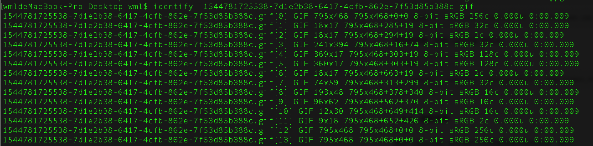

最近在做百度OCR图片文字识别时，因为免费版OCR接口调用次数有限，就想把多张图片合并成一张进行文字识别。这就需要在代码中进行图片合并操作，在查找图片批量合并方案时，看到了linux的convert命令，可以将多张图片合并，且使用特别方便，纪录一下convert是如何使用的。
convert命令属于ImageMagick工具包，具有图片创建、编辑，转换图像格式，以及调整图像大小、模糊、裁切、除去杂点、抖动 、绘图、翻转、合并、重新采样等功能。
要想使用covert命令，首先要安装ImageMagick包。
ImageMagick是一款创建、编辑、合成，转换图像的命令行工具，支持格式超过 200 种，包括常见的 PNG, JPEG, GIF, HEIC, TIFF, DPX, EXR, WebP, Postscript, PDF, SVG 等。功能包括调整大小，翻转，镜像，旋转，扭曲，修剪和变换图像，调整图像颜色，应用各种特殊效果，或绘制文本，线条，多边形，椭圆和贝塞尔曲线等。对于图片的处理，ImageMagick基本可以实现任何常用操作。
官网：https://imagemagick.org/
中文镜像站： http://www.imagemagick.com.cn/index.html
ImageMagick支持Linux, Windows, Mac OS X, iOS, Android OS 等平台。
安装参考文档地址：https://www.imagemagick.org/script/download.php
我以mac为例，安装方式如下：
brew install imagemagick安装ImageMagick工具包后，即可使用其工具命令。
ImageMagick 包括一组命令行工具来操作图片，安装好 ImageMagick 后，终端就可以使用如下命令了。
magick: 创建、编辑图像，转换图像格式，以及调整图像大小、模糊、裁切、除去杂点、抖动 ( dither )、绘图、 翻转、合并、重新采样等。
convert: 等同于 magick 命令。
identify: 输出一个或多个图像文件的格式和特征信息，如分辨率、大小、尺寸、色彩空间等。
mogrify: 与 magick 功能一样，不过不需要指定输出文件，自动覆盖原始图像文件。
composite: 将一个图片或多个图片组合成新图片。
montage: 组合多个独立的图像来创建合成图像。每个图像都可以用边框，透明度等特性进行装饰。
compare: 从数学和视觉角度比较源图像与重建图像之间的差异。
display: 在任何 X server 上显示一个图像或图像序列。
animate: 在任何 X server 上显示图像序列。
import: 保存 X server 上的任何可见窗口并把它作为图像文件输出。可以捕捉单个窗口，整个屏幕或屏幕的任意 矩形部分。
conjure: 解释并执行 MSL ( Magick Scripting Language ) 写的脚本。
stream: 一个轻量级工具，用于将图像或部分图像的一个或多个像素组件流式传输到存储设备。在处理大图像或 原始像素组件时很有用。
各个命令具体介绍，参考地址： https://imagemagick.org/script/command-line-tools.php
基本命令的使用，遵循 Unix 风格的标准格式：
command [options] input_image output_image比如我们将一张宽高 300x300 的图片 goods.png 转换成 200x200 的goods.jpg，可以这样用
convert -resize 200x200 goods.png goods.jpg-resize 定义图片尺寸，ImageMagick 所有的选项参数都在这个【命令行选项手册】。
接下来介绍我在OCR文字识别中将多张图片合并一张方法，代码合并使用convert命令，如我有图片1.jpg、2.jpg、3.jpg，我想将这三张图片合并成1张并命名为a.jpg,命令如下：
convert -append 1.jpg 2.jpg 3.jpg a.jpgPython代码：
import os
imgDir = ''
pathDir = sorted(filter(is_img, os.listdir(imgDir)))
# 通过拼接convert命令，进行图片合并
tmp = 0
shell = 'convert -append '
for imgName in pathDir:
tmp = tmp + 1
# 每20张图片合并成一张
if tmp % 20 == 0:
# 将合并后图片放到图片目录下的convert_img子目录
shell = shell + ' ' + imgDir + 'convert_img/' + imgName
# 执行convert命令
os.system(shell)
shell = 'convert -append '
shell = shell + imgDir + imgName + ' '
# 图片遍历完成后将最后的图片合并
shell = shell + ' ' + imgDir + 'convert_img/' + imgName
os.system(shell)使用上面方法就可以将多张图片合并成1张，再去识别这一张图片就可以省很多借口调用量了。但要注意若合并的图片太多，会导致识别失败；要根据原图片情况选择合适的图片合并量；若原图片只有固定的一部分有文字，还可以先把图片上有文字的部分裁剪下来再合并。
对于ImageMagick，不光可以用执行系统命令的形式，各常用语言都有封装好的包，可以直接使用。
各语言包参考地址： https://imagemagick.org/script/develop.php
需求：将一张宽高为 900x600 的图片 goods.jpg 生成宽高为 150x100 的缩略图 thumbnail.jpg
convert -resize 150x100 -quality 70 -strip goods.jpg thumbnail.jpg解释：
-resize 延伸解读，如下。
上面的例子中，输入的图片和输出的图片比例是一致的，所以不会有特殊情况出现，但是遇到比例不同的时候，上面的写法并不会得到 150x100 的图像，而是会根据图像的宽高比例，取最大值，得出来的结果可能是 150 宽和更小的高，或者 100 高和更小的宽；所以 IamgeMagick 提供了几种符号来定义缩放。
convert -resize '150x100!' goods.jpg thumbnail.jpg
convert -resize '150x100>' goods.jpg thumbnail.jpg
convert -resize '150x100<' goods.jpg thumbnail.jpg!：不管图片宽高如何，都缩放成 150x100 这样的尺寸。
：只有宽高均大于 150x100 的图片才缩放成该尺寸 ( 按比例取最大值 )，小于的图片不做处理。
<：与 > 功能相反。
提示：因为有些字符是 Linux shell 或其他系统的特殊字符，所以需要用引号包裹起来或者用反斜线 \ 转义，另外，不同平台可能引号都是有差异的。
自定义裁剪图片：**convert -crop MxN+a+b src.jpg dst.jpg从原始图片中剪切出 M x N 尺寸（宽为M，高为N）的图片，+a+b 表示以左上角为坐标原点，向右和下方向分别为X轴Y轴的点 (a,b) 位置开始。你也可以使用 -a-b 以右下角为坐标原点，左和上为XY轴的坐标系。
需求 ① ：给图片居中加上透明文本水印。
convert -draw 'text 0,0 "JD.COM"' -fill 'rgba(221, 34, 17, 0.25)' -pointsize 36 \
-font 'cochin.ttc' -gravity center joy.jpg watermark.jpg解释：
需求 ② ：给图片加上倾斜平铺透明文本水印。
convert -size 100x100 xc:none \
-fill '#d90f02' -pointsize 18 -font 'cochin.ttc' \
-gravity center -draw 'rotate -45 text 0,0 "JD.COM"' \
-resize 60% miff:- | composite -tile -dissolve 25 - joy.jpg watermark.jpg解释：文本平铺水印其实是将文本画成一张 png 图片，然后用这张透明图片在目标图片上进行平铺。
图释：
大概逻辑如下：
如果加上随机计算，可能代码会比较多，所以这里写成固定值，方便理解。
convert 'xc:[100x40!]' -pointsize 20 -font 'cochin.ttc' \
-gravity NorthWest -strokewidth 1 \
-fill '#b72b36' -stroke '#b72b36' -draw 'translate 13,19 rotate 10 text -5,-8 "5"' \
-fill '#821d70' -stroke '#821d70' -draw 'translate 36,13 rotate -8 text -8,-8 "C"' \
-fill '#c7960a' -stroke '#c7960a' -draw 'translate 60,23 rotate 5 text -5,-8 "2"' \
-fill '#03610a' -stroke '#03610a' -draw 'translate 85,25 rotate 13 text -8,-8 "E"' \
-strokewidth 2 -stroke 'rgba(248, 100, 30, 0.5)' -fill 'rgba(0, 0, 0, 0)' \
-draw 'bezier -20,30 -16,10 20,2 50,20' \
-draw 'bezier 50,20 78,42 138,36 140,16' \
+noise Impulse \
captcha.jpg结果：
鉴于字体比较细，可以用 strokewidth 加边框来加粗，或者使用字体的粗体版本，这里使用了第一种方式。
解释：
convert \
\( -crop 300x300+10+25 joy.jpg \) \
\( -resize 400x400 -crop 300x300+50+0 logo: \) -swap 0,1 +append \
\( -clone 0 -flop -flip \) -append \
-resize 200x200 combined.jpg结果如下：
解释：
笔记：
5.1、GIF 转图片
convert -coalesce rain.gif frame.jpg-coalesce：根据图像 -dispose 元数据的设置覆盖图像序列中的每个图像，以重现动画序列中每个点的动画.
也就是加-coalesce参数每张图片和gif中肉眼看到的一致，不加该参数图片会失真。
5.2、定义输出文件名
上面默认输出的文件名为：frame-0.jpg, frame-1.jpg, frame-2.jpg ...，
如果想使用下划线作为符号，输出为 frame_0.jpg, frame_1.jpg, frame_2.jpg ...，则可以如下设置。
convert -coalesce rain.gif frame_%d.jpg或者
convert -coalesce -set filename:n '%p' rain.gif 'frame_%[filename:n].jpg'解释：
5.3、解析特定帧
如果只想拿到 GIF 的第一帧，可以这样设置。
convert -coalesce 'rain.gif[0]' first_frame.jpg拿到某些帧，如同 -clone 的写法。
convert -coalesce 'rain.gif[0-2]' some_frames_%d.jpg5.4、获取页数
通过 identify 命令我们可以简要得到文件的信息，如下。
identify rain.gif
通过identify，将结果用换行符分割，可以得到gif的图片页数。
对于pdf,同样可以使用该命令。
5.5、图片转 GIF
convert -loop 0 'frame-*.jpg' rain_animation.gif将所有与 frame-*.jpg 模式匹配的图像转换成一张 GIF 图像，如 frame-0.jpg，frame-1.jpg等。
-loop 设置动画循环次数，0 表示无限循环。
设置每张图像的播放速度可以使用 -delay 选项。
笔记： 在 IM 读取系列文件时，frame-10.jpg 会排在 frame-2.jpg 前面，为获得图像正确的读取顺序，可以为文件名设置前导零 ( leading zeros )。如：frame-000.jpg, frame-001.jpg, frame-002.jpg ... frame-010.jpg。
所以在生成图像时，我们可以使用 %03d 获得三位前导零。
convert -coalesce rain.gif frame-%03d.jpgPDF 与图片互转跟 GIF 很相似，稍微有些格式自身需要注意的区别。
ImageMagick本身是不具备解析 PDF 的功能的，需要依赖专门解析这种格式的外部程序，如官方指明的 ghostscript 解析程序。
首先安装 gs，还是演示 Mac OS 安装：
brew install ghostscript把pdf转换成图片，有两种方式能达到我们想要的结果:
① convert -density 150 -flatten 'download.pdf[0]' first_page.jpg
② convert -density 150 -background white -alpha remove download.pdf download.jpg解释：
图像处理 - ImageMagick 简单介绍与案例 https://aotu.io/notes/2018/06/06/ImageMagick_intro/
convert 命令剪切合并图片 https://upliu.net/convert-crop-composite-image.html
ImageMagick 中文站 http://www.imagemagick.com.cn/index.html
[1] https://imagemagick.org/: https://imagemagick.org/[2] http://www.imagemagick.com.cn/index.html: http://www.imagemagick.com.cn/index.html[3] https://www.imagemagick.org/script/download.php: https://www.imagemagick.org/script/download.php[4] https://imagemagick.org/script/command-line-tools.php: https://imagemagick.org/script/command-line-tools.php[5] 命令行选项手册: https://www.imagemagick.org/script/command-line-options.php[6] https://imagemagick.org/script/develop.php: https://imagemagick.org/script/develop.php[7] MIFF: https://www.imagemagick.org/script/miff.php[8] 维基百科的解释: https://en.wikipedia.org/wiki/B%C3%A9zier_curve[9] 这篇中文文章的解释: http://www.html-js.com/article/1628[10] IM 官方示例的描述: https://www.imagemagick.org/Usage/draw/#bezier[11] 看这里: https://www.imagemagick.org/script/formats.php#builtin-images[12] -adjoin: https://www.imagemagick.org/script/command-line-options.php?#adjoin[13] 百分比选项 ( Percent Escapes ): http://imagemagick.org/script/escape.php[14] -delay: https://www.imagemagick.org/Usage/anim_basics/#gif_anim[15] https://aotu.io/notes/2018/06/06/ImageMagick_intro/: https://aotu.io/notes/2018/06/06/ImageMagick_intro/[16] https://upliu.net/convert-crop-composite-image.html: https://upliu.net/convert-crop-composite-image.html[17] http://www.imagemagick.com.cn/index.html: http://www.imagemagick.com.cn/index.html